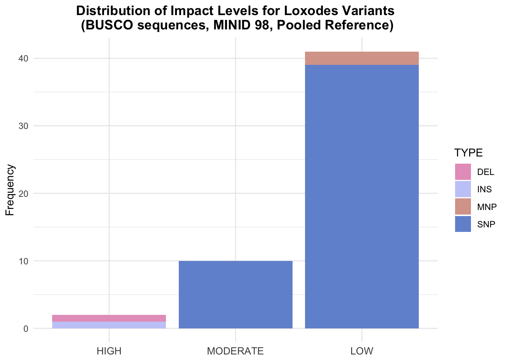
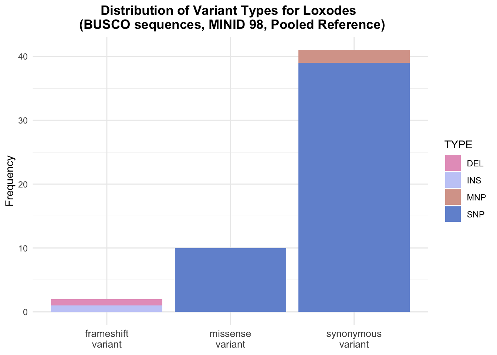
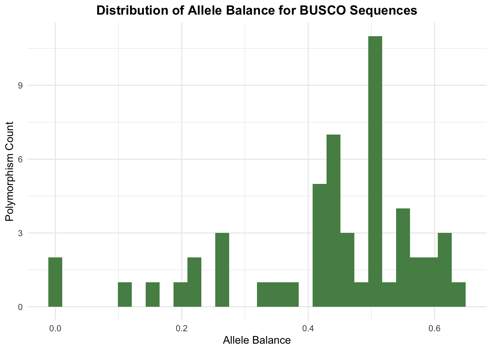
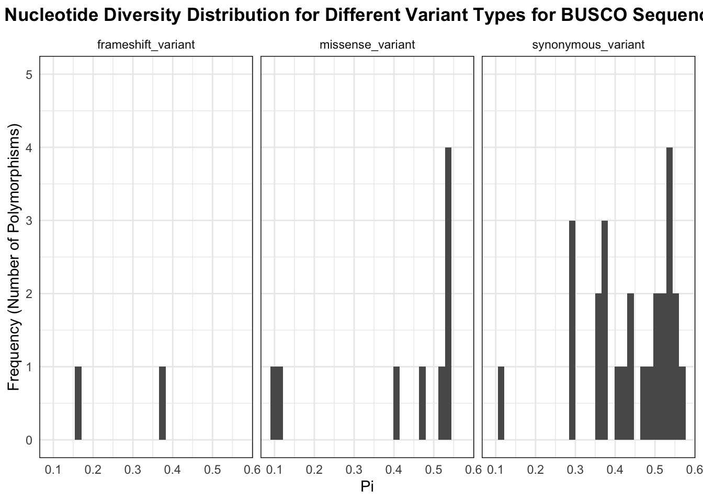

BUSCO (Benchmarking Universal Single-Copy Orthologs) is a software for analyzing the completeness of genomes, gene sets, and transcriptomes.
Because we have such a high number of contigs, subsetting to these highly conserved BUSCO contigs can be valuable.
Once we have the fasta file of BUSCO sequences, we can use a Python script to extract the contig names. You can make a script with this Python code to get a file with just the contig names.
filename = input("Enter file name of fasta file ")
f = open(filename, 'r')
text = f.readlines()
f.close()
def extract_contigs(fasta_file):
contigs = ''
for line in fasta_file:
if line[0] == ">":
contigs = contigs + line[1:] + "\n"
else:
pass
return contigs
result = extract_contigs(text)
exportfile = input("enter export file name")
file = open(exportfile, "w")
file.write(result)
file.close()
We can then read the file generated by the script as well as the vcf (or annotated tsv) file into R.
library(tidyverse)
library(vcfR)
library(wesanderson)
lox_98 <- read.vcfR("./Data/loxodes_pooled/all_filtered_98.vcf")
lox_ann <- read_tsv("./Data/loxodes_pooled/lox_98_CDS_filtered_3")
lox_busco_contigs <- read_tsv("./Data/busco_contigs", col_names = FALSE)Now we can subset to only the BUSCO contigs. Then, we can add a column holding the type of the variant (single nucleotide polymorphism, insertion, etc).
#get BUSCO contigs as a vectors
lox_busco_contigs_vector <- lox_busco_contigs %>% pull(X1)
#subset to only BUSCO contigs
lox_busco_variants <- lox_ann %>%
filter(CHROM %in% lox_busco_contigs_vector)
#classify the variant types
lox_busco_variants_type <- lox_busco_variants %>%
mutate(TYPE = case_when(
nchar(ALT) == 1 & nchar(REF) == 1 ~ "SNP",
nchar(ALT) > nchar(REF) ~ "INS",
nchar(REF) > nchar(ALT) ~ "DEL",
nchar(ALT) == nchar(REF) & nchar(ALT) != 1 ~ "MNP"
))Now that we’ve subset to BUSCO variants, we can run the same kind of analyses we did with the full set of variants.
#distribution of impact levels for busco variants
lox_busco_variants_type %>%
group_by(`ANN[*].IMPACT`, TYPE) %>%
summarize(Count = n()) %>%
ggplot(aes(x = `ANN[*].IMPACT`, y = Count, fill = TYPE)) +
geom_bar(stat = "identity", position = "stack") +
labs(x = NULL,
y = "Frequency",
title = "Distribution of Impact Levels for Loxodes Variants\n (BUSCO sequences, MINID 98, Pooled Reference)") +
theme_minimal() +
theme(plot.title = element_text(face = "bold", hjust = .5),
axis.text.x = element_text(size = 10)) +
scale_fill_manual(values = wes_palette("GrandBudapest2")) +
scale_x_discrete(limits = c("HIGH", "MODERATE", "LOW"))
#distribution of variant effects for busco variants
lox_busco_variants_type %>%
group_by(`ANN[*].EFFECT`, TYPE) %>%
summarize(Count = n()) %>%
ggplot(aes(x = str_replace_all(`ANN[*].EFFECT`, "_", "\n"), y = Count, fill = TYPE)) +
geom_bar(stat = "identity", position = "stack") +
labs(x = NULL, y = "Frequency", title = "Distribution of Variant Types for Loxodes \n (BUSCO sequences, MINID 98, Pooled Reference)") +
theme_minimal() +
theme(plot.title = element_text(face = "bold", hjust = .5), axis.text.x = element_text(size = 10)) +
scale_fill_manual(values = wes_palette("GrandBudapest2"))
lox_busco_variants_type %>%
ggplot() +
labs(x = "Allele Balance", y = "Polymorphism Count", title = "Distribution of Allele Balance for BUSCO Sequences") +
geom_histogram(aes(x = as.numeric(AB)), fill = "#568D55") +
theme_minimal() +
theme(plot.title = element_text(face = "bold", hjust = .5))
We can also read in the nucleotide diversity data (generated by Vcftools) and do the same kind of analyses as done with the full set of variants. As with the nucleotide diversity analysis for the full set, filtering is crucial to ensure that the values we’re looking at aren’t just a result of missing data.
nuc_div <- read_tsv("./Data/loxodes_pooled/nuc_div.sites.pi")
lox_busco_div <- lox_busco_variants_type %>%
left_join(nuc_div, by = c("CHROM" = "CHROM", "POS" = "POS"))
#takes vcfR object, minimum number of samples that must have a variant, and minimum number of samples that must have a called genotype
get_twice_filtered_sites <- function(vcf, min_var = 3, min_geno = 3) {
ad <- extract.gt(vcf, element = 'AD')
samples_ad <- ad %>%
as_tibble(rownames = "ID") %>%
pivot_longer(cols = 2:(ncol(ad) + 1), names_to = "Sample") %>%
filter(is.na(value) == FALSE) %>%
group_by(ID) %>%
summarize(num_samples = n()) %>%
filter(num_samples >= min_var) %>%
pull(ID)
gt <- extract.gt(vcf, element = 'GT')
samples_gt <- gt %>%
as_tibble(rownames = "ID") %>%
pivot_longer(cols = 2:(ncol(ad) + 1), names_to = "Sample") %>%
filter(is.na(value) == FALSE) %>%
group_by(ID) %>%
summarize(num_samples = n()) %>%
filter(num_samples >= min_geno) %>%
pull(ID)
intersect(samples_gt, samples_ad)
}
#get filtered sites
lox_filtered_sites <- get_twice_filtered_sites(lox_98)
#plot nucleotide diversity distribution for each variant effect
lox_busco_div %>%
mutate(ID = paste(CHROM, POS, sep = "_")) %>%
filter(ID %in% lox_filtered_sites) %>%
ggplot(aes(x = PI)) +
geom_histogram() +
facet_wrap(~`ANN[*].EFFECT`) +
theme_minimal() +
labs(x = "Pi",
y = "Frequency (Number of Polymorphisms)",
title = "Nucleotide Diversity Distribution for Different Variant Types for BUSCO Sequences") +
theme(plot.title = element_text(face = "bold", hjust = .5),
panel.border = element_rect(color = "black", fill = NA)) +
scale_y_continuous(limits = c(0,5), breaks = seq(0, 5, by = 1))